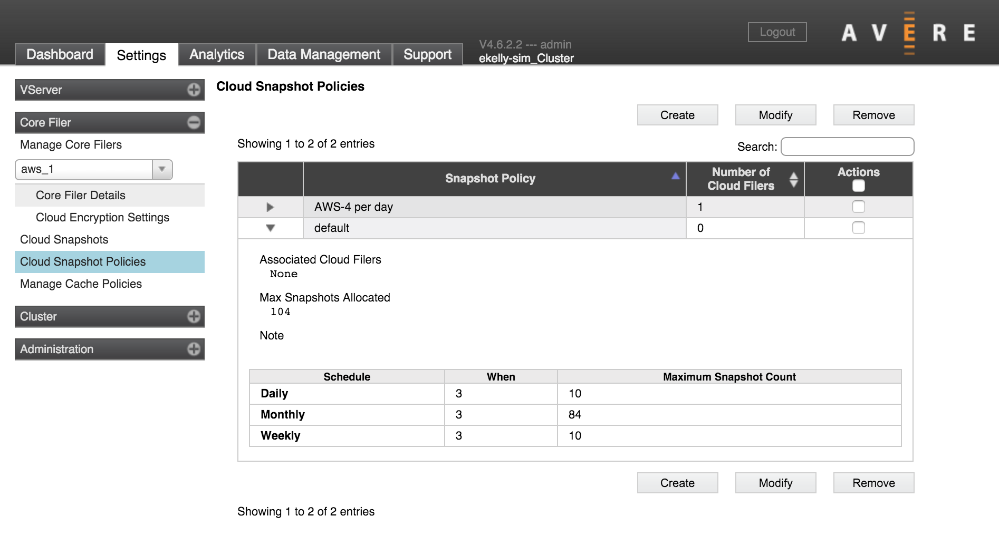

Core Filer > Cloud Snapshot Policies
The Cloud Snapshot Policies settings page lets you create automated snapshot schedules and assign them to cloud core filers. (Snapshot policies also can be assigned to core filers from the Core Filer Details page - read Snapshot Policy to learn more.)
Note
In addition to the automated snapshot policies configured on this page, you can perform manual snapshots, which occur immediately and do not repeat on a schedule. Manual snapshots are created from the Cloud Snapshots page.
Caution
While creating a snapshot, Avere OS does not cache client writes. During this time, file changes are written synchronously to the cloud core filer, which is typically much slower than writing to the cache. To avoid disrupting client work, keep this limitation in mind when deciding how to schedule cloud snapshots.
About Snapshots
Snapshots record the differences in files since the previous snapshot.
Snapshots are not a replacement for regular backups. Because Avere OS cloud snapshots are stored in the Avere cluster, it’s possible to lose snapshot records along with the stored data if a significant failure occurs. Avere Systems recommends backing up important data regularly to a separate storage system.
The Avere OS snapshot feature is provided for cloud storage only. Many NAS storage products have their own snapshot functions, which are configured directly in those products’ operating systems, but cloud storage systems do not provide a built-in snapshot function. Avere OS includes this basic cloud snapshot system to help cloud storage more closely mirror the function of traditional hardware storage.
Note that a default snapshot policy is automatically created, but it is not automatically applied to any core filer. You must enable snapshots explicitly.
Working with the Policy List
All of the cloud snapshot policies in the cluster are listed in a table.
You can sort the list by a column value, or filter the list by using the search box. (Clear the search box to see all policies.)
Click the triangle at the left of a policy name to see details.
To customize or delete a policy, select it in the Actions column and click the Modify or Delete button. Buttons appear at the top and bottom of the table that lists the policies.
Note
You cannot delete the default policy, but you can change it.
Applying a Snapshot Policy to a Core Filer
There are two ways to apply a snapshot policy to a core filer:
From the Edit Filer panel in the Core Filer Details page:
Read Snapshot Policy to learn more.
From the Cloud Snapshot Policies page (this page) while editing or creating a snapshot policy:
While editing the snapshot policy, list the core filer or filers in the policy field labeled Add Cloud Core Filers.
Using snapshots on core filers is optional.
A snapshot policy can be applied to multiple core filers at once, but each core filer can be assigned at most one cloud snapshot policy.
If you change a core filer’s snapshot policy, old snapshots from the previous policy are not automatically deleted. You can delete them manually from the Cloud Snapshots page.
Creating a Snapshot Policy
Click the Create button to make a new policy.
The process is similar for modifying an existing policy - select the policy in the Actions column and then click the Modify button.

The Create Snapshot Policy window
Schedule Options
Select the type of schedules to use for this policy. You can select one or more of the time options.
Note
Each cloud core filer can use only one snapshot policy at a time. If you want to keep daily and weekly snapshots, you must configure them in the same policy.
Specify the schedule time in 24-hour format. Snapshot times are based on the Avere cluster’s time setting.
Schedule types include:
Hourly - Takes several snapshots each day. Choose from one of the preset time schedules, or choose Custom and enter the times to save snapshots in the text field. (The Default Snapshot Time setting does not apply to hourly snapshot schedules.)
Caution
Hourly snapshots are not recommended because they can cause performance issues when the data is frequently modified. The overhead required to synchronize snapshots to cloud storage is more significant than the overhead for NAS snapshots, so creating multiple snapshots per day should be avoided - especially for filers that store a large number of temporary files that will be created and discarded within a day.
Daily - Takes one snapshot a day. Set the time by using the Default Snapshot Time setting near the top of the panel.
Weekly - Takes one snapshot a week, on the first day of the week (typically Sunday). Set the snapshot time by using the Default Snapshot Time setting near the top of the panel.
Monthly - Takes one snapshot a month, on the first day of the month. Set the snapshot time by using the Default Snapshot Time setting near the top of the panel.
Maximum Snapshot Count
The Maximum Snapshot Count value is the number of snapshots to keep. After this number is reached, the oldest snapshots from that schedule category (in this policy) are deleted.
Add Cloud Core Filers
Optionally, you can apply this policy to one or more core filers immediately by specifying them in the Add Cloud Core Filers field.
If you specify a core filer that already has a snapshot policy, a pop-up window will ask you to confirm the policy change. Click OK to change the policy, or click Cancel to keep the previously assigned snapshot policy. Changes to the content of the policy are saved even if you cancel assigning it to a core filer.
Note that snapshots from a previously used policy are not automatically deleted.
Policy Note
The Note field lets you store additional information about this policy. Creating a note is optional.
Saving the Policy
After configuring the settings that you want, click the Create Policy button at the bottom of the panel to save your configuration. (If you are modifying an existing policy, the button is labeled Modify Policy.)
If you change your mind, click Cancel to abandon the settings and return to the last saved state.